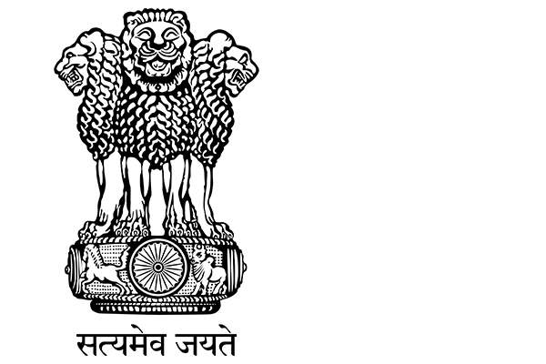
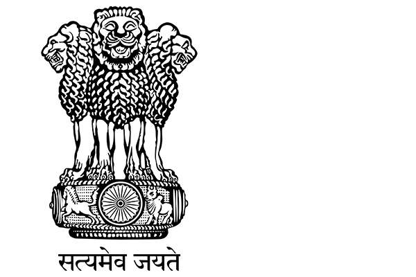

Bhavan's
New Science College


 

Committiees
Anti–Ragging Committee
The Supreme Court defined ragging in the Vishwa Magritte matter (1999) as, "Any disorderly conduct whether
by words spoken or written or by an act which has the effect of teasing, treating or handling with rudeness
any other student, indulging in rowdy or undisciplined activities which causes or is likely to cause
annoyance, hardship or psychological harm or to raise fear or apprehension thereof in a fresher or a junior
student or asking the students to do any act or perform something which such the students will not in the
ordinary course and which has the effect of causing or generating a sense of shame or embarrassment so as
to adversely affect the physique or psyche of a fresher or a junior student." (Raghavan Committee Report,
2007, para. 3.19).
Other organisations/bodies working in this field have also attempted to define ragging, the variety of definitions
being reflective of differences in perspective and interpretation. In 2007, the Committee of Consultants to Raghavan
Committee considered ragging "neither a means of familiarization nor an introduction with freshers, but a form of
psychopathic behaviour and a reflection of deviant personalities. Further, ragging reproduces the entrenched power
configurations prevalent in civil society" (Raghavan Committee Report, 2007).
Convener:Mr.Surender
Co-convener:Mrs.K.Archana
Members: 1.Mrs.Indumati
2.Mrs.Alekhya
3.Mr.Pavan
Anti Drug Committee
National Anti-Drug Addiction Day is observed every year on 2nd October. The aim of the day is to make India free from drug and to preserve the talent. Father of the nation Mahatma Gandhi condemned the use of drugs. Drug addiction leads to chronic brain diseases. Drugs are one of the greatest evils for our society. It not only affects the individual but also the society. It causes loss of ability to make rational decisions and takes precedence over everything else – career, family, loved ones, friends and even civic sense. Most people start to take drugs for experiment, fun and curiosity while some succumb to peer-pressure. Some people misuse life saving medicines as drugs.
Adverse effects of Drugs
Health problems
Memory disorders
Difficulty in balancing and walking
Anxiety, depression and sleep disturbances
Sudden weight loss or weight gain.
Behavioral and Psychological Changes
Drop in performance at work place
Loss of interest and suspicious behaviors
Violent attitude
Change in personality
How to Deal with Drug and Drug Addicts
Give emotional support
Cultivate Strong will
Stay away from addicts
Get involved in activities
Join a support group
Social Support
Convener: 1.Mrs. K. Archana
2.Mr. Venkatesh (PD)
Co-convener:
Members: 1.Mrs. Indumati Students - Shadab (B.com)
2.Mrs. Alekhya Dharani (B.com)
3.Ms. Mukundamala Shiva (B.Sc.)